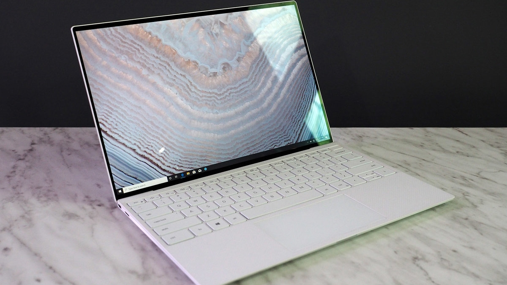
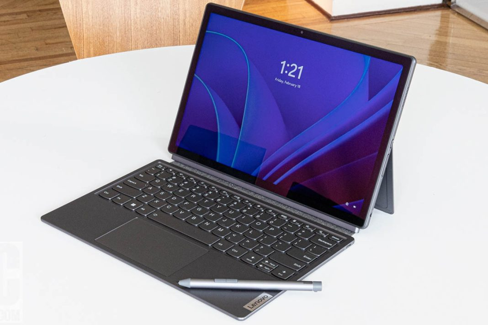

3. Laptop Ultrabook
Ultrabook adalah laptop tipis dan ringan dengan desain modern, cocok untuk mobilitas tinggi. Dengan baterai tahan lama, penggunaan SSD, dan performa efisien, ultrabook sangat cocok untuk profesional yang sering bepergian. Contohnya adalah MacBook Air dan Dell XPS

4. Laptop Workstation
Laptop workstation adalah laptop yang dirancang dengan spesifikasi tinggi dan kemampuan yang mirip dengan workstation desktop, sehingga dapat digunakan untuk tugas berat seperti desain grafis, pemrograman, analisis data besar, simulasi, dan komputasi ilmiah, di mana performa menjadi kunci. Laptop jenis ini menggabungkan portabilitas laptop dengan kekuatan yang biasa ditemukan di workstation desktop.

5. Laptop 2 in 1
Laptop 2-in-1 menggabungkan fungsi laptop dan tablet dalam satu perangkat. Layar sentuh dan engsel fleksibel memungkinkan laptop ini diubah menjadi mode tablet. Cocok untuk pengguna yang membutuhkan perangkat fleksibel untuk bekerja dan hiburan.
